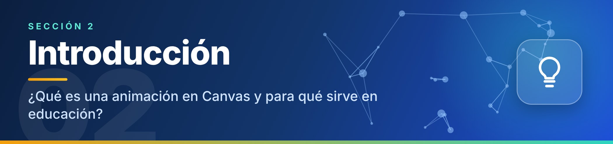

Introducción

¿Qué es una animación en Canvas?
Canvas es un elemento de HTML5 (la etiqueta <canvas>) que funciona como un lienzo en blanco dentro de la página web. Con código JavaScript se dibujan sobre él formas, textos e imágenes. Una animación en Canvas se logra borrando y volviendo a dibujar el lienzo muchas veces por segundo (con requestAnimationFrame), cambiando un poco la posición de los objetos en cada cuadro. El resultado es movimiento fluido que se ejecuta directamente en el navegador, sin instalar programas adicionales.
1
Dibujar los objetos en el lienzo
2
Borrar y volver a dibujar
3
Cambiar un poco su posición
¿Para qué sirve en educación?
Ver lo invisible
Permite ver procesos que normalmente son invisibles, como el viaje de los datos dentro de una red.
Interactuar
El estudiante pulsa botones, elige el origen y el destino y observa qué ocurre.
Repetir y usar en cualquier equipo
Se puede repetir las veces que haga falta y funciona en computadoras, tabletas y celulares.
Crear y adaptar
Es un recurso que el docente puede crear y adaptar con herramientas libres, sin costo de licencias.